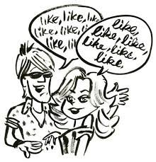

"The menu is not the meal." --Alan Watts
Lots of recent Mind-Ticklers have dealt with rage, terror, helplessness and surrender, as we’ve experienced near-constant furious drama and breath-holding adrenaline for a long while here in the US.
So in honor of our latest election, perhaps as a little vacay from all that, it might be nice for some relief from so much foam-at-the-mouth intensity.
Herewith, something smaller, lighter, less fraught. Herewith, something that on initial glance might even seem frivolous.
Which may not mean it is actually frivolous, or less worthy of consideration.
After all, The Mind-Tickler is about integrating all the woo-woo understanding and questing so many have been aiming for, with the actual practicalities of everyday human life.
Because really when it comes down to it, what good is all that seeking and realizating and OM-ing and Aha-ing, if it separates us from life? We can’t all live non-stop in a cave on a mountaintop. At some point we have to live these lives.
So maybe there's value in a bit of light-weight non-profundity offering a little breathing space while also bringing yummy treats.
So today let’s play with language. Specifically, the word “like.” Specifically how the word “like” is like, inserted into, like, every where.
See? Frivolous. Hopefully you’ll bear with your friendly Mind-Tickler.
Because in languages all over the world (*see below if you care), people are throwing “like” into their sentences willy nilly.
What’s up with that?
Of course you have wondered and spent many a sleepless night, like, pondering.
Experts tell us “like” is just filler, a placeholder.
But what do we need filler for? What are we holding a place for?
We’re also told it’s meaningless. Though if that were the case, then we could just as well substitute other words, like, say, “buzzsaw” or “fruitcake,” for just as effective filler as “like.”
Fruitcake, why not, buzzsaw, substitute any other word?
No. “Like” it is. Of all the possible words, it has to be “like.”
It seems “like” serves some purpose the language folks, like, haven’t noticed.
So let’s go to the dictionary shall we?
“Like” means many things, all of which can be mighty interesting from a non-dual perspective. For today let’s notice that in addition to those, “like” means…
As if, similar to, approximating. “Like” means resembling an object but not being the object. “Like” means nearly the same but not the same.
“Like” indicates exaggeration, approximation of the real, illusion, lie.
Not literal, not true, not real.
Well, look at that.
“Like” is a tell, as in poker.
“I stayed up till, like, 3am” is pretty surely an indicator of exaggeration. “I feel like I can’t take it anymore,” reveals that I can, in actuality, take it. “It’s like, who cares what they think” indicates caring very much what they think. “I need to, like, borrow money” indicates that money is unlikely to be repaid.
”He’s not acting like himself,” and “I feel like myself again” pretend that the “self” is, like, anything real at all.
The word “like” very often comes just before the as-if, the exaggeration, the not real.
The word “like” points to the not real.
Well. Who knew?
Wouldn’t it be something if, all along, we have had an indicator, an exposer of the truth… right there in our everyday sentences, not even bothering to hide…
That we are not a self, we are not a real thing, we are not what we appear to be, and
we have always known it.
Our language shows that this self business is a barely disguised fraud.
Even more amazing, once we pay attention to likes, we discover that we actually speak the truth, in a literal “simply not capable of lying” kind of way,
Always.
We can't lie about the illusion. There is always a tell.
Turns out whatever it is we really are has a ferocious, ever-present insistence on integrity.
So it allows the “like” lie while at the same time, making sure to point to the truth.
“Likes” and “feels likes” and “seems likes” are falsehoods which keep us honest.
We just haven't noticed.
In the spiritual world, we often hear about the limitations of language. But it turns out that it's through that language, through “like” and other words,
that existence actually reveals, actually shows us…
what we know but don’t know we know, what we are while pretending to be what we are not.
Through that limiting language. Through those words we brush aside as limited or inadequate or meaningless filler.
All of which is great, like, news.
Because it means we can continue to play-act being individuals, continue to pretend it’s possible to act like ourselves, continue to pretend to be, like, an authentic self at all.
While all along, still, also, acknowledging the actual anyway.
Which is, like, really cool.
And which also helps us see that
there’s truly nothing else we can actually,
like,
Do.
And that there's truly nothing else that is actually,
like,
frivolous.
*English, Portuguese, Spanish, French, Italian, Mandarin, Armenian, Hebrew, Hindi, Bengali, Czech, Filipino, Finnish, Russian, and more.
Click to get your Mind-Tickled every week: http://eepurl.com/bQJg9v
Click here to see Judy on Buddha at the Gas Pump: https://bit.ly/JudyCohenBatgap
